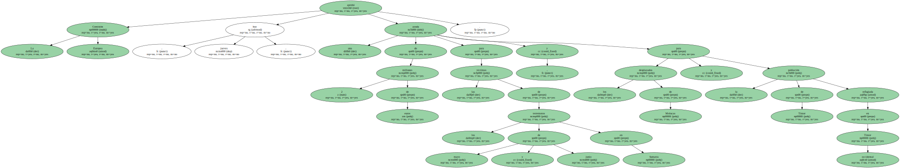
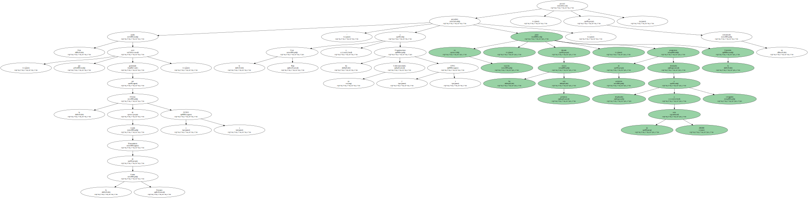
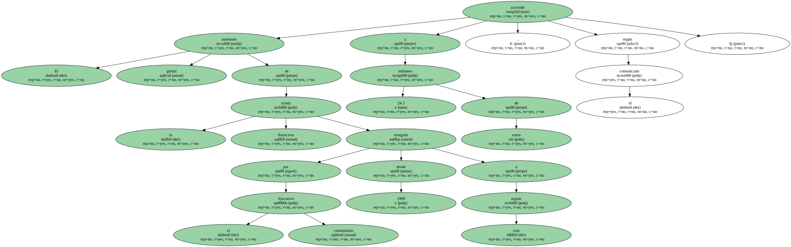
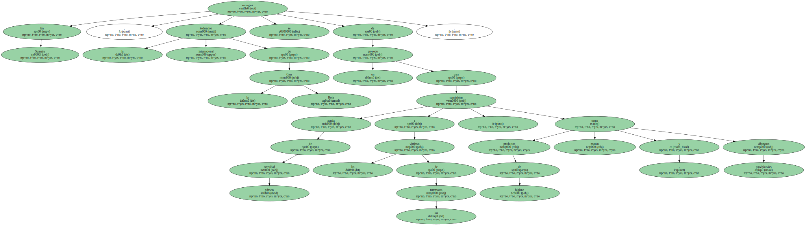
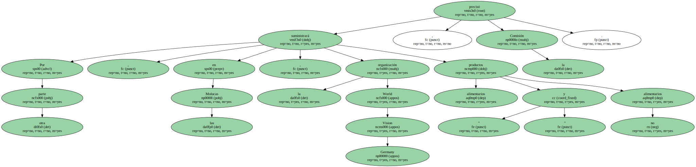
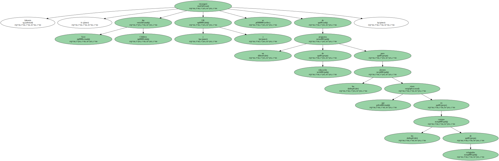

La Comisión Europea aprobó hoy , jueves , una ayuda de 2 millones de euros para las víctimas de los terremotos de mayo y junio en Sumatra , y para los desplazados de Molucas y la población de Timor refugiada en Timor occidental.
Esta ayuda , que será gestionada por la Oficina de Ayuda Humanitaria de la Unión Europea ( ECHO ) , " permitirá a la Cruz Roja y las Organizaciones no Gubernamentales ( ONG ) poner en marcha , durante los próximos seis meses , programas de asistencia destinados a más de 200.000 desplazados y refugiados " , precisó la Comisión en un comunicado.
El montante global de la ayuda financiera otorgada por el Ejecutivo comunitario desde 1999 a esta región asciende a 24.5 millones de euros , según el comunicado.
En Sumatra , la Federación Internacional de la Cruz Roja se encargará de un proyecto para suministrar ayuda de primera necesidad a las víctimas de los terremotos , como productos de higiene , mantas y albergues provisionales.
Por otra parte , en las Molucas , la organización World Vision Germany suministrará productos " alimentarios y no alimentarios " , precisó la Comisión.
En Timor occidental será la organización Care UK la encargada de combatir la malnutrición y poner en marcha un programa de higiene y saneamiento para las víctimas de las inundaciones en la frontera de Timor oriental.

Además , Save the Children ( UK ) se encargará de un programa de educación para los jóvenes que viven en los campos de refugiados.
